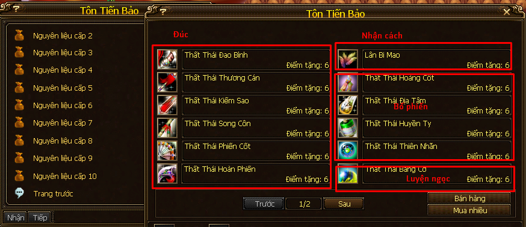

Đúc¶
Học công thức chế vũ khí bằng đồ tường tương ứng 1 lần.
Nguyên liệu để đúc:
Khoáng sản chính (nghề khai khoáng).
Đoạn thạch (dùng kỹ năng gia công nguyên liệu khoáng sản phụ/bạn sinh từ nghề khai khoáng).
Đúc cấp 1 - 12, dùng kỹ năng gia công nguyên liệu gia công các nguyên liệu có tên đuôi là:
- Đao Binh.
- Thương Cán.
- Kiếm Sao.
- Song Côn.
- Phiến Cốt.
- Hoàn Phiến.
Các nguyên liệu này nhặt được từ quái vật ở các bãi luyện công từ 1x - 10x hoặc mua trong Tiểm Điểm Tặng - Tiền Trang.
Có thể vào tiền trang, tiệm điểm tặng để xem hoặc mua các vật phẩm để gia công, nhớ đọc kĩ mô tả, không mua được thì đi ra map luyện công nhặt nhé!
Đả tạo đồ.

Nhớ là đứng gần bệ rèn chỗ các NPC dạy Đúc thì mới có thể sử dụng kỹ năng Đúc nhé!
Học Nghề¶
- Đại Lý: NPC Quá Tam Chùy (228, 90).
- Lạc Dương: NPC Vương Đức Phúc (309, 302).
- Tô Châu: NPC Tiết Chúc (350, 245).
Thăng Cấp¶
- Từ 1 - 5: thăng cấp tại NPC dạy đúc.
- Từ 5 - 10:
- Lạc Dương: NPC Gia Luật Đại Thạch (215, 205).
- NPC Mã Ứng Hùng (chữ Công) trong thành thị bang hội.
Đả Tạo Đồ¶
- Cấp 1 - 2: Đại Lý - NPC Quá Tam Chùy (228, 90).
- Cấp 1 - 3: Lạc Dương - NPC Vương Đức Phúc (309, 302).
- Cấp 3 - 4: Tô Châu - NPC Tiết Chúc (350, 245).
- Cấp 5: Liêu Tây - NPC Lưu Quý (279, 48).
- Cấp 6: Quỳnh Châu - NPC Võ Cát (280, 215).
- Mua tại Tô Châu - NPC Lý Lạc Thi (290, 187) bằng điểm thiện ác.
- Mua tại Lạc Dương - NPC Tái Lỗ Ban di chuyển từ thành Đông sang thành Tây theo chu kỳ.
Đồ Tường¶
- Vũ khí cấp 1x - 3x: tại các NPC dạy đúc (khu chữ Thiết trên bản đồ).
- Vũ khí cấp 4x: Thương Sơn - NPC Mã Đầu Lĩnh (70, 48).
- Vũ khí cấp 5x: Yến Vương Cổ Mộ Tầng 5 - NPC Quách Để Huy (95, 24).
- Vũ khí cấp 6x - 10x: mua tại NPC Võ Đại Uy (chữ Binh) trong thành thị bang hội.
- Vũ khí cấp 2x - 10x: mua tại trưởng môn phái bằng điểm cống hiến môn phái.
LingYun ghi chép lúc 22:37 31/7/2018